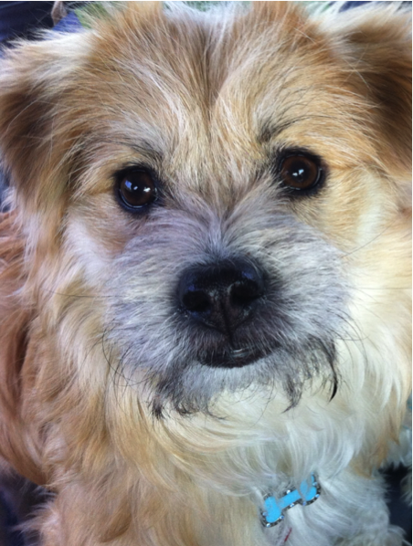
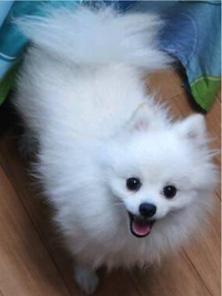
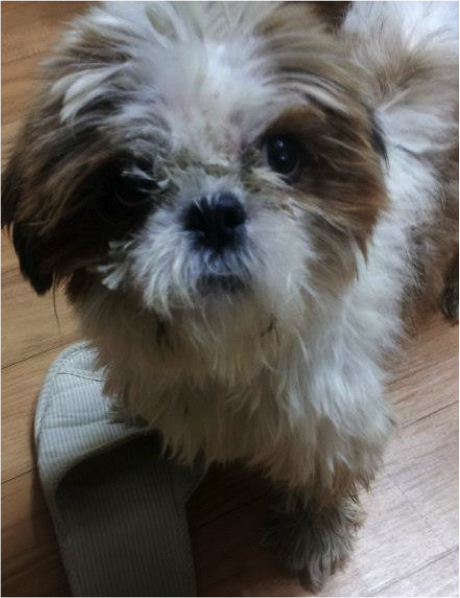

Gandalf's Canine Friends
Geumbok
Geumbok was Gandalf's first friend in Korea. They used to go to Mojeon Park together and play on the tennis courts.
Daryeong
Daryeong also walked in the park with Gandalf. They played off-leash together at the top of the hill by the fighter plane.
Lola

Lola is Gandalf's only friend who is a girl but she wasn't his girlfriend even though they were both unneutered.
Buddy
Buddy was a mangy mutt who cleaned up good! He didn't hang out with Gandalf much because he found a home quickly.